Feign使用
原本使用RestTemplate直接发送请求存在以下问题。
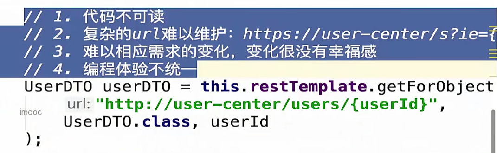
使用RestTemplate发送Http请求时产生了上图中的很多问题，所以我们引入了声明式HTTP客户端，也就是声明一个接口，然后制定好服务名和Mapping，一旦在Java代码层面调用了该接口（注入依赖）的方法，那么就会自动产生Http请求，、
不需要像原来一样使用name属性(服务名)和参数分开的形式，也不需要占位符，实参会直接拼接到Mapping上，别人一看见调用这个方法也很容易知道这个方法的作用。
最终形式如下：
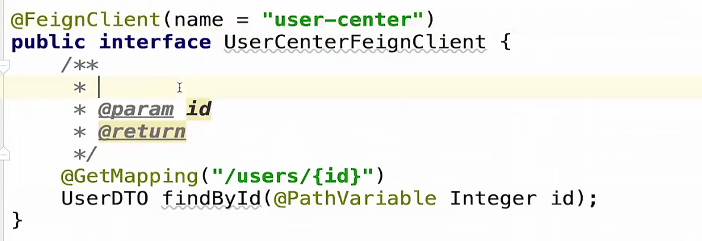
Feign的组成(源码使用了很多种设计模式)
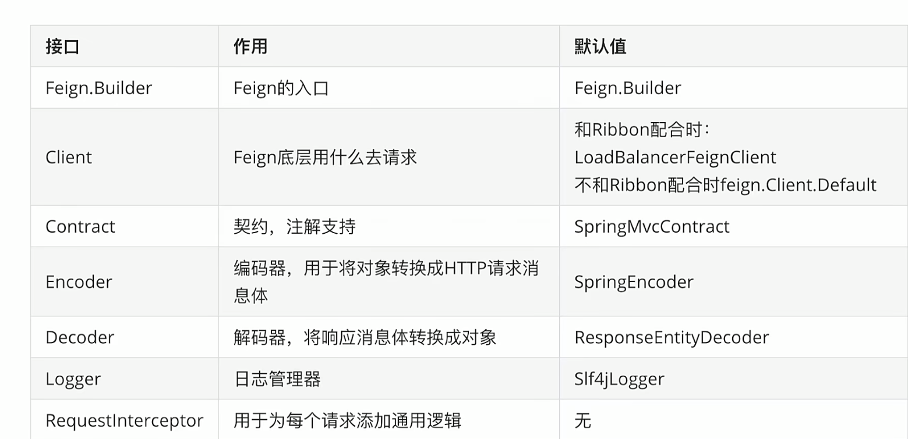
可以看到上面第三条提供了注解支持，和MVC的兼容，所以我们可以使用@GetMapping等注解。
Feign也支持细粒度的配置（日志），方式上同Ribbon
Feign如何配置日志呢，因为Feign本质上是发送HTTP请求的客户端，我们想要看请求的时间或者加入一些日志看具体细节，Feign的日志级别如下(Spring的日志不能配置，Feign有单独的一套日志程序)。
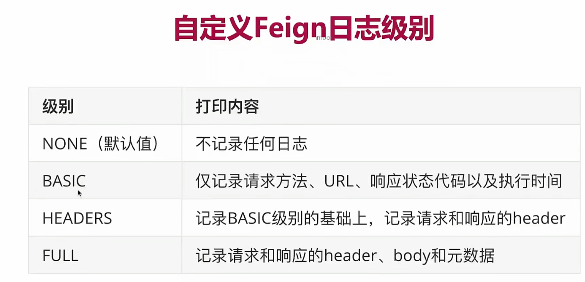
Java代码配置方式
和Ribbon类似，也是在@FeignClient注解上配置configuration属性，指定class类
要加一步在配置文件里将类的全路径设置为debug（原本我们配置的spring的日志是直接写包路径然后写日志级别，所以这里也能看出单独配置的Feign不在默认日志的监管范围中）
和Ribbon相同的是同样会产生上下文重叠，可以把配置类（含有@Bean的类）放到扫描范围外，也可以直接不加@Configuration，相当于不作为配置类加入容器，也就不会产生配置上的上下文重叠，当然如果产生效果和Ribbon一样。
属性配置方式
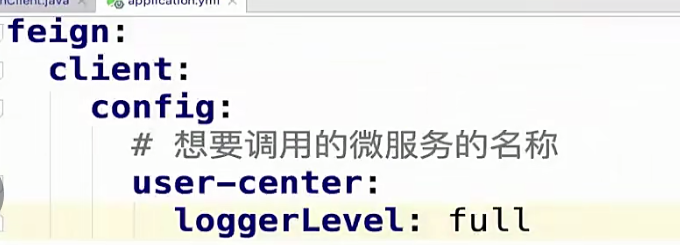
Feign的全局配置省略。。。。。
Feign支持的配置项（仅记录属性配置（方便））
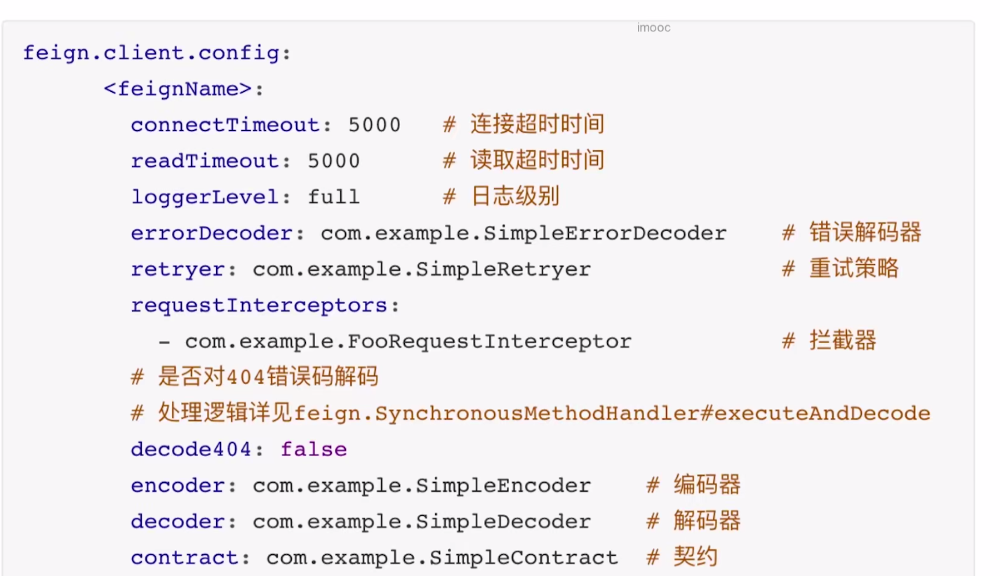
对比总结
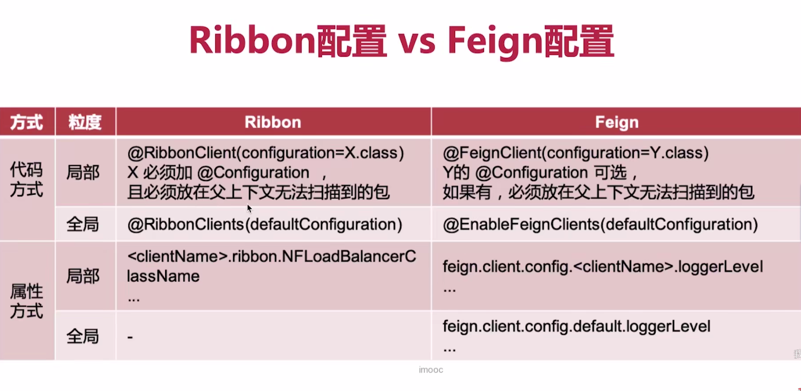
记一下Feign配置方式的优先级
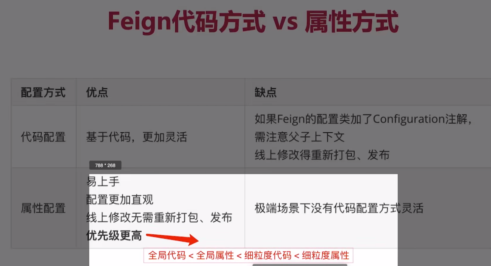
Feign的继承了解一下。。。。。。
官方不推荐，但是业界使用很多，自己选择使用
多参数请求构造
多参数请求构造其实就是我们在用post或者是get请求的时候，比如说传入Query string或者是请求体
在解决方式上，我们仍然去兼容springmvc的注解，参数修改为一个固定的json对象，在controller层面去调用我们的一个client的方法，注意controller层面的get请求。不需要加注解，直接写方法就可以了，Get的请求会自动解析，只有Post请求才有请求体
我们get或者是post在调用Feign时，类似于使用map来进行传入，我们可以用Map接收，但是不建议很麻烦，我们直接新加一个注解@springquerymap，会自动将成的参数加载到我们的实参中
我们前面使用Feign都是调用了自己的服务，如果我们去调用不在自己Nacos上的服务，也就是底层脱离ribbon，那么我们编写代码的方式如下，注意，此时我们的name只是命名，Name或者是value属性必须有一个，然后再附加一个url属性，指向具体的目标地址
注意，这里的name不能和我们的微服务地址相同，不然会优先解析成我们的微服务地址，@Getmapping直接设置为空即可
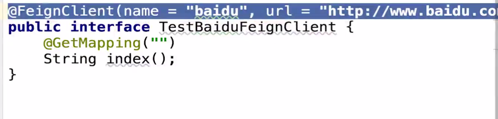
对比
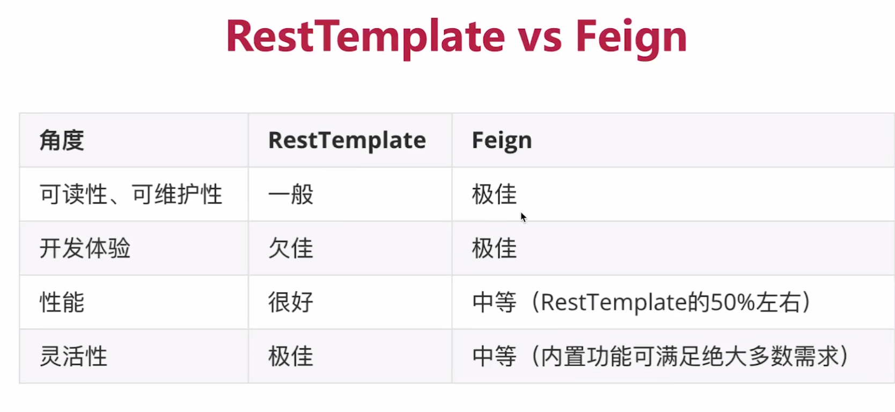
虽然在对比上两者各有优势，但是我们仍然推荐使用Feign，而杜绝使用rest template，使用是因为它的一个可读性，并且它的灵活性也足够适用于大部分场景，杜绝使用resttemplate。是因为我们要杜绝在同一个项目中使用多种相同作用的第三方，采用方式要始终统一。
Feign的性能优化
我们通过查看Feign的组成，发现连接默认使用的是的是urlConnection，他是没有连接池的功能的，所以我们想要使用连接池需要引入其他包的依赖
我们通过查看Feign的组成，发现连接默认使用的是的是urlConnection，他是没有连接池的功能的，所以我们想要使用连接池需要引入其他包的依赖，比如阿帕奇的HTTPclient，或者okHTTP，引入之后再配置文件中修改如下配置即可，具体的配置参数需要自己进行压测测试来选择最好的参数，也可以自己收集资料
性能优化可以提升15%左右
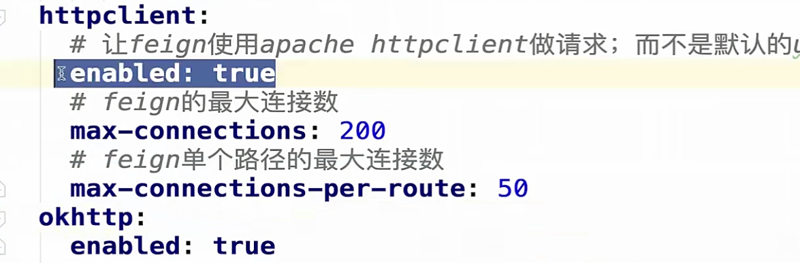
Feign各项问题可以参考手记：https://www.imooc.com/article/289005
If you like this blog or find it useful for you, you are welcome to comment on it. You are also welcome to share this blog, so that more people can participate in it. If the images used in the blog infringe your copyright, please contact the author to delete them. Thank you !